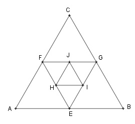

Aufgabe 118 a) 1 l Alkohol wird mit 4 l Wasser vermischt. In 1 l dieser Mischung kommen wieder 4 l Wasser. Wie oft muss dieser Mischvorgang durchgeführt werden, damit die Mischung noch 0,00032 l Alkohol enthält? b) Das Dreieck ABC ist gleichseitig mit einer Seitenlänge von 12 cm. Das Dreieck EFG entsteht, indem die Mittelpunkte der Seiten des Dreiecks ABC miteinander verbunden werden usw. b1) Bestimmen Sie jeweils den Flächeninhalt der ersten 3 Dreiecke. b1) Bestimmen Sie die Summe der ersten 5 Flächen- inhalte.

a) Ursprünglicher Anteil Alkohol = 1 l = a1 Anteil Alkohol in der 1. Mischung: 1 l Alkohol + 4 l Wasser = 5 l Mischung, davon 1/5 Alkohol ≙ 20% ≙ 0,2 l Alkohol/pro l Mischung --> q = 0,2 an = 0,00032 l an = a1 * qn-1 0,00032 = 0,2n-1 Logarithmieren: lg 0,00032 = lg 0,2n-1 lg 0,00032 = (n - 1) * lg 0,2 |:lg 0,2 lg 0,00032 n - 1 = ------------ |+1 lg 0,2 lg 0,00032 n = ------------ + 1 = 6 lg 0,2 b1) 12 cm * h A1 = ----------- 2 Satz von Pythagoras im Dreieck h = EC AB AC2 = EC2 + (----)2 2 12 122 = EC2 + (----)2 |-62 2 EC2 = 108 |√ EC = 6 * √3 cm 12 * 6 * √3 A1 = ------------- = 62,35 cm2 2 Durch die Unterteilung entstehen aus dem Dreieck ABC 4 gleich große Dreiecke --> q = 0,25 An = A1 * qn-1 A2 = 62,35 * 0,25 = 15,59 cm2 A3 = 62,35 * 0,252 = 3,9 cm2 b2) 1 - (0,25)5 s5 = 62,35 * ------------- = 83,05 cm2 1 - 0,25